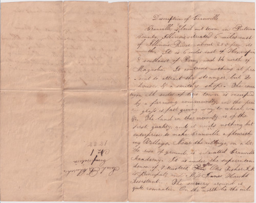
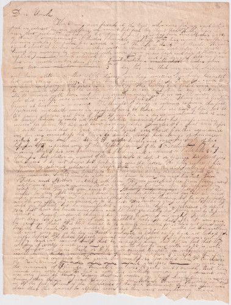

The Letters of the Church Family, 1838 - 1852
Transcribed by Wilfrid Charles Bailey. Originals are in Snowflake, AZ.
Description of Granville, 1838

Account of Samuel's sickness and death, March 1841

Letter, February 1844